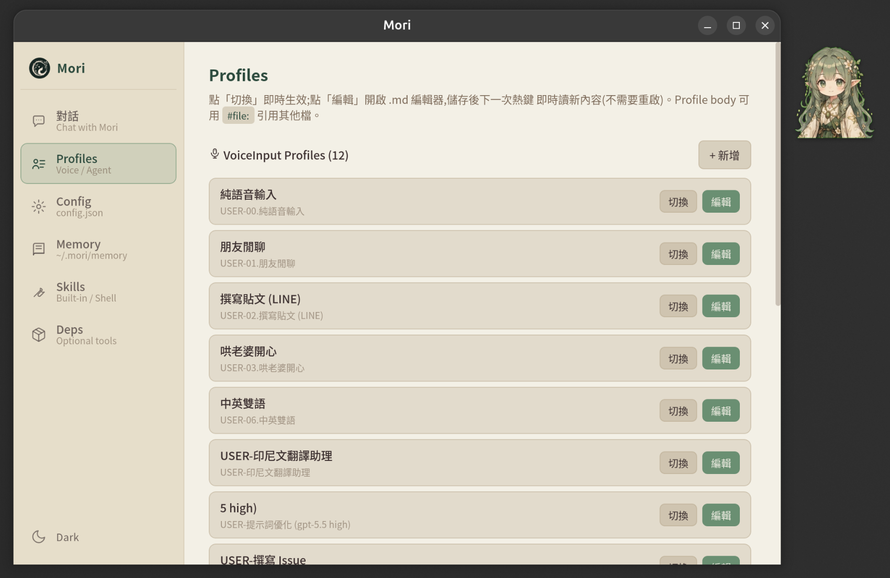
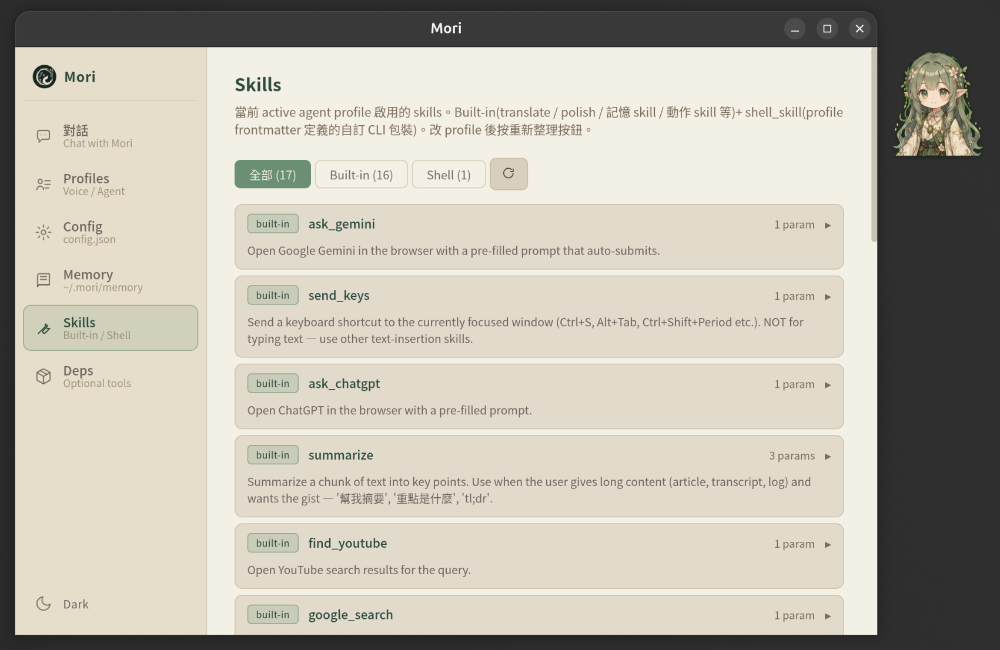

Mori
住在腦裡的精靈 · 桌面身體版
「精靈不會離開森林,牠只是搬到你的腦裡。
靜靜記得,牠的森林,有你經過的痕跡。」
實際主視窗 — 按 Ctrl+Alt+Space 開麥克風,或下面直接打字。Mori 自己判斷要 chat 還是動手做事。
Alt+0~9 語音輸入 · Ctrl+Alt+0~9 給 agent 做事。前綴鍵選模式,數字選 profile。
Profile frontmatter shell_skills: 就能把 gh / docker / kubectl / 自家 script 變 Mori 能力,不用改 Rust。
STT 走 whisper-local + LLM 走 ollama,完全離線。或用 Bash CLI proxy 帶 claude Pro/Max quota。
內建 Mori Dark / Light,左下角 sun/moon 一鍵切。~/.mori/themes/*.json 自己寫 theme。
Mori 自己決定該記什麼,寫進 ~/.mori/memory/*.md。下次同主題對話會自己 recall,所有記憶 user 可編。
講「翻譯這段」Mori 自動看剪貼簿 / 反白文字。URL 自動 fetch_url 抓內容做摘要。
主視窗(880×600,sidebar 6 個 tab)+ 桌面常駐 floating sprite + Ctrl+Alt+P picker overlay。



